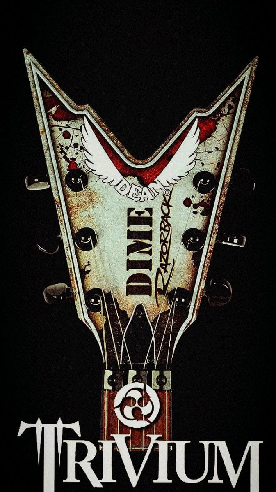
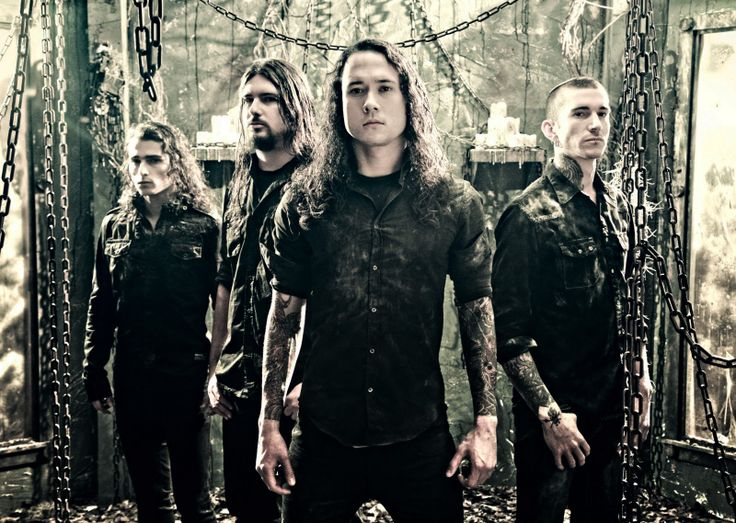
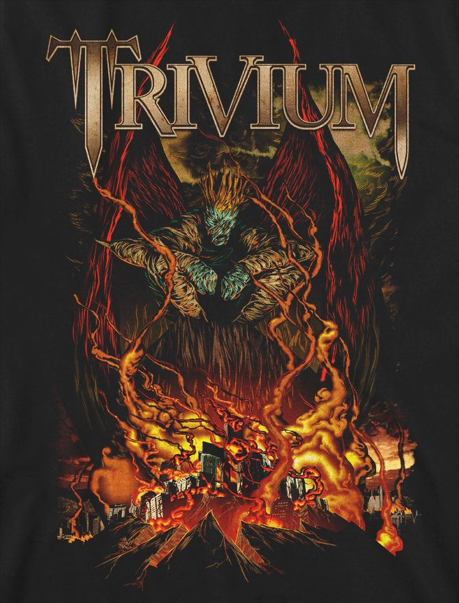

⚜️ ¿Quiénes son?



⚜️ ¿Cómo surgieron?
Trivium es una banda de metal formada en el año 1999 en Orlando, Florida, por el vocalista y guitarrista Matthew Heafy, cuando apenas era un adolescente. Su nombre proviene del concepto de las tres artes liberales: lógica, gramática y retórica. Comenzaron tocando en pequeños locales y competiciones locales hasta que firmaron su primer contrato discográfico en 2003 con el sello Roadrunner Records.
Su estilo mezcla thrash metal, metalcore y heavy metal tradicional, con letras que abordan temas filosóficos, sociales y personales. A lo largo de su carrera han lanzado más de diez álbumes de estudio y han ganado reconocimiento mundial por su energía en el escenario y su evolución constante. Aunque no son tan comerciales como otras bandas, tienen una base de fans muy leal y respetada dentro de la escena del metal.
♱ Escucha un fragmento ♱
⚜️ Datos curiosos
- ✦ Se formaron en Orlando, Florida en 1999
- ✦ Matthew Heafy ganó una competencia de guitarra a los 13 años
- ✦ Su nombre significa "tres caminos" en latín
- ✦ Mezclan thrash, metalcore y heavy metal
- ✦ Integrantes actuales: Matt Heafy, Corey Beaulieu, Paolo Gregoletto y Alex Bent
♱ Video ♱
Para conocer más sobre su trayectoria visita su sitio oficial 🤘